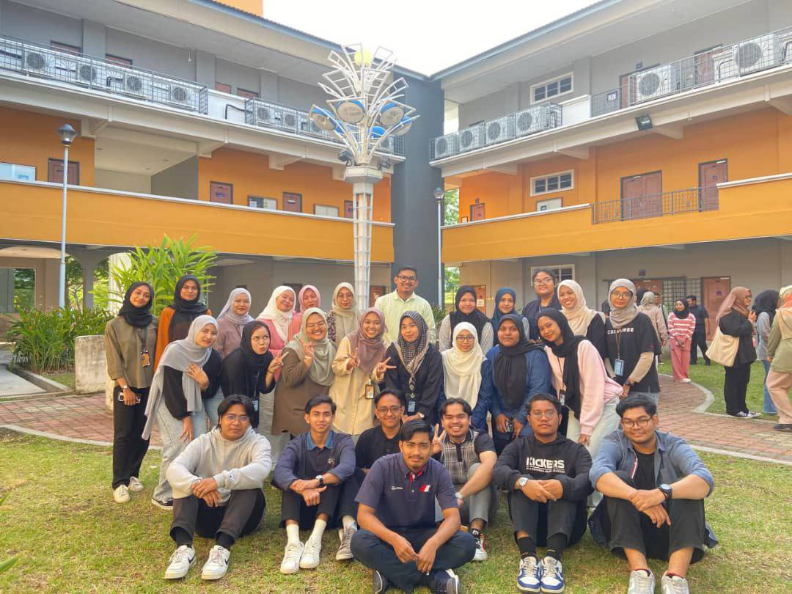
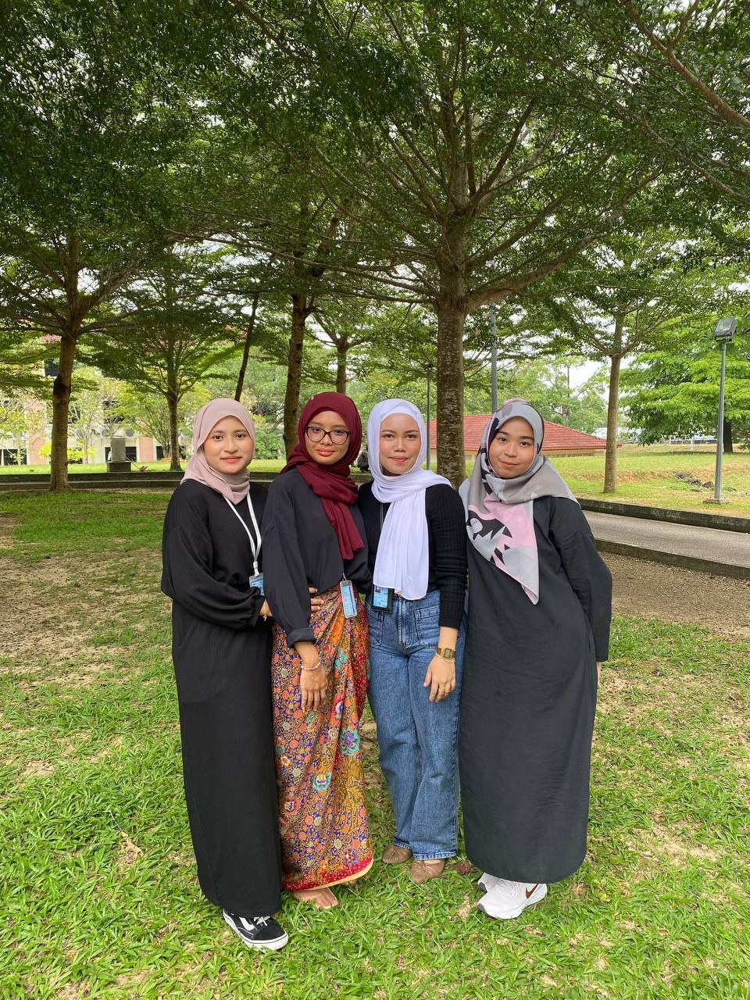

Classmates of KIM1105C
|  |
|---|
My Classmates
Some of my classmates are particularly notable for their lively personalities and kind attitudes. They seem to have a sincere desire to learn in the classroom and they frequently offer thoughtful comments to class debates. Their friendliness stands out about them, they go out of their way to build relations within us and create a welcoming environment in the classroom.
Best Friends
|  |
|---|
My Beloved Best Friends
I am fortunate to have some amazing best pals in my life. They are one of my favorite things about them because of their constant support during my diploma. I can always rely on their support and understanding, whether I'm facing problems or enjoying success.
The numerous moments we've had together and our shared past make my best pals genuinely unique. We have bonded through highs and lows that surpass just friendship, it seems more like a family unit. I cherish the laughter, jokes and life events that have contributed significantly to our friendship.
In this video, my closest friends Fatin Athirah and Ernie Nabila celebrated my twentieth birthday. I truly appreciated the core memory they provided me with while. I studied at UITM Kedah and even if it was only this simple I will always remember it in my heart. |
|
Having best friends is a source of immense joy and numerous benefits for one's well-being. These trusted companions offer unparalleled emotional support, serving as a reliable confidants during both the highs and lows of life. Beyond mere companionship, best friends create a tapestry of shared memories and inside jokes, forming a unique bond that deepens over time. The laughter shared experiences, and understanding fostered in these friendships contribute significantly to increased happiness and a profound sense of belonging |
Copyright ©2023 Izzah Iskandar